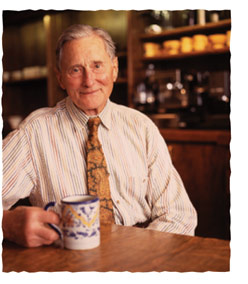

So long, Alfred
A slice of Bay Area history passed away a few days ago: Alfred Peet, the founder of Peet's coffee. You can go to Starbucks for some mild-mannered coffee, but if you need to get really cranked up, nothing beats Peet's. Fortunately he taught a new generation of roasters, so my daily pilgramage to Peet's can continue to keep me going. I usually go to the Menlo Park shop, which is the second-oldest Peet's. There's always a line out the door every morning.A small piece of Peet's trivia: one of Jonathan's first acts as CEO was to get a Peet's shop into Sun's two main campuses in the Bay Area. Another: Peet's became nationally famous when folks started to notice that Judge Lance Ito, during the OJ Simpson trial, always had a mug of Peets in front of him - he got hooked on Peets as a student in Berkeley.
| September 6, 2007 |